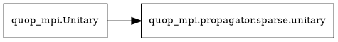

Sparse
Propagators for general sparse matrix operators. Used in QAOA and for custom Hamiltonians that don’t fit the circulant or diagonal structure.
Propagator Class
- class quop_mpi.propagator.sparse.unitary(*args, **kwargs)
Bases:
UnitaryCompute the action of a mixing unitary with a sparse operator or a sequence of mixing-unitaries with sparse operators (see the
unitary_n_paramsattribute below).Inheritance Diagram:

See
quop_mpi.Unitary.- Attributes:
- unitary_type
'sparse'- planner
false- unitary_n_params
Set on initialisation to
1or more. Ifunitary_n_parameters > 1, the Operator Function must return alist[csr_matrix]of lengthunitary_n_parameterscontainingcsr_matrixpartitions of oflocal_irows.
- propagate(ts)
Simulation of the action of a :term`unitary`.
When implemented,
propagatecontains a call to a method (typically a contained in a complied Python extension module) that takes the class attributesinitial_state,final_stateandMPI_COMM, together with attributes describing the parallel partitioning scheme and variational parametersx, as input. The action of the unitary is computed in MPI parallel, with the computed result written tofinal_state.Warning
Not implemented by the base
Unitaryclass.- Parameters:
- xndarray[float64]
a 1-D real array of
n_paramsvariational parameters
Examples
def propagate(self, x): external_propagator( x, self.partition_table, self.initial_state, self.final_state, self.MPI_COMM )
Operators
Pre-defined operator functions for sparse propagators.
Predefined Operator Functions for
quop_mpi.propagator.sparse.unitary.
Operator Functions for unitary instances of type 'sparse' return CSR
partitions of one or more matrices. More than one CSR partition defines a
sequence of mixing unitaries with independent
unitary parameters.
Partitioned CSR Matrix Format
- lb
lower index of the system state and observables partition,
quop_mpi.Unitaryattribute- ub
upper index of the system state and observables partition,
quop_mpi.Unitaryattribute- W_col_index
a 1-D integer array containing non-zero column indexes for rows
lbtoub, grouped by ascending row index- W_values
a 1-D real array containing non-zero values for rows
lbtoub, grouped by ascending row index in the same order asW_col_index.For unit-valued matrices (where all non-zero entries are 1.0), this may be
None. WhenW_valuesisNone, the propagator skips value storage and uses an optimized code path, reducing memory usage and improving performance. This is automatically detected for adjacency matrices such as those used by the hypercube mixer.- W_row_start
a 1-D integer array of length
ub - lb + 1, a cumulative sum of the number of non-zero elements in each row such thatW_row_start[row_index + 1] - W_row_start[row_index]is equal to the number of non-zero elements in the row with indexrow_indexandW_rows_start[row] - local_i_offsetgives the local starting index for the non-zero column indexes and values inW_col_indexandW_valuesfor the row with indexrow_index
These are returned by the Operator Function as
list[list[W_row_start], list[W_col_indexes], list[W_values]].
Propagation Method
The sparse propagator uses Chebyshev polynomial expansion to compute the matrix exponential \(e^{-itH}\). This method:
Automatically estimates the spectral radius of the operator
Expands the matrix exponential as a sum of Chebyshev polynomials
Is numerically stable and efficient for sparse Hermitian matrices
This replaces the previous scaling-and-squaring approach.
- quop_mpi.propagator.sparse.operator.hypercube(system_size: int, lb: int, ub: int) list[list[np.ndarray[np.int64]], list[np.ndarray[np.int64], list[np.ndarray[np.float64]]]]
Generate a hypercube (QAOA) sparse mixing unitary operator.
An Operator Function for
quop_mpi.propagator.sparse.unitary.- Parameters:
- system_sizeint
size of the simulated QVA,
quop_mpi.Unitaryattribute- lbint
lower index of the system state partition,
quop_mpi.Unitaryattribute- ubint
upper index of the system state partition,
quop_mpi.Unitaryattribute
- Returns:
- list[list[np.ndarray[np.int64]], list[np.ndarray[np.int64], list[np.ndarray[np.float64]]]]
a CSR partition of the hypercube (QAOA) mixing operator
- Raises:
- RuntimeError
if
system_size % 2 != 0
- quop_mpi.propagator.sparse.operator.serial(partition_table: list[int], MPI_COMM: Intracomm, variational_parameters: np.ndarray[np.float64], function: Callable, *args, **kwargs) list[list[np.ndarray[np.int64]], list[np.ndarray[np.int64], list[np.ndarray[np.float64]]]]
Generate an operator for a sparse mixing unitary using a serial Python function.
An Operator Function for
quop_mpi.propagator.sparse.unitary. Thefunctionargument must be defined via a corresponding FunctionDict on initialisation of theunitaryinstance. Additional positional and keyword arguments in theFunctionDictare passed thefunction. The signature for afunctiongenerating an operator with one or more operator parameters is,def function(variational_parameters, *args, **kwargs) -> list[csr_matrix]
where
variational_parametersmay be excluded ifunitary.operator_n_params = 0.- Parameters:
- partition_tablelist[int]
describes the parallel partitioning of the observables and system state,
quop_mpi.Unitaryattribute- MPI_COMMIntracomm
MPI communicator,
quop_mpi.Unitaryattribute- variational_parametersnp.ndarray[np.float64]
a 1-D real array of operator parameters, passed to
functioniflen(variational_parameters) > 0,quop_mpi.Unitaryattribute- functionCallable
function returning a list of scipy CSR matrices
- Returns:
- list[list[np.ndarray[np.int64]], list[np.ndarray[np.int64],
- list[np.ndarray[np.float64]]]]
a CSR matrix partition
- Raises:
- TypeError
if
functiondoes not return alistof scipy CSR matrices